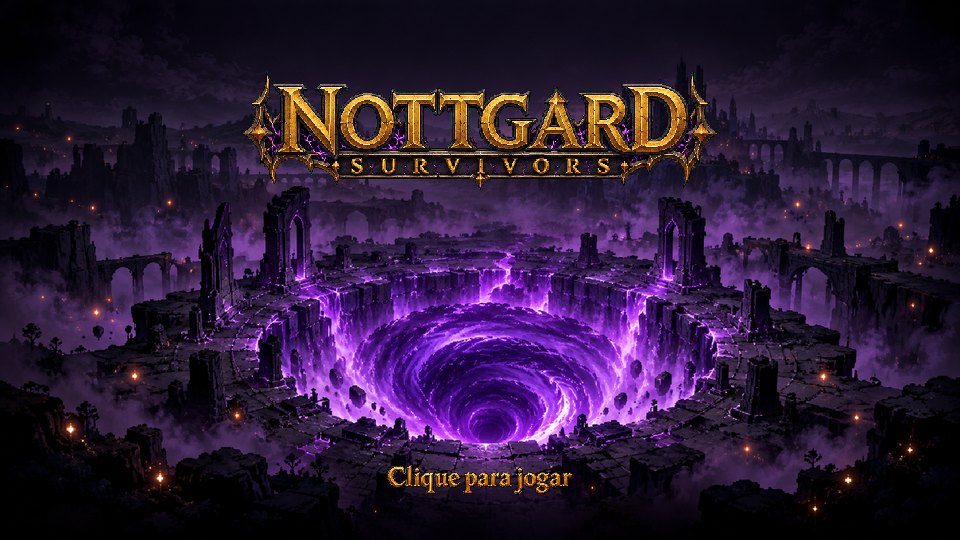

L02 · Clique para jogar · v01 CANON VISUAL
Nova candidata opcional de lettering da FILA-026. Referências: logo, fundo do título e família de metal existente. Aceite visual recebido do dono; integração pendente. Recibo.
Leitura em tamanho reduzido
Conteúdo com 30px de altura, sem esticar as letras:
Canvas preparado de 480×64, com margem e escala proporcional:
Grafia conferida visualmente: Clique para jogar. Legibilidade e estilo aceitos pelo dono na revisão v01.
Composição de revisão

Composição técnica para comparar cor e leitura. Não é captura do jogo, não altera posição de elementos e não testa o pulso de alfa. O runtime escolhe o texto conforme mouse/teclado/controle/toque; esta arte só representa a mensagem de mouse.
Arquivos e preparação
PNG nativo · Prévia com alfa · Prompt executado · Auditoria e hashes
Uma chamada image_gen built-in. Fonte ciano preservada. Remoção técnica do ciano externo e dos vazios internos das letras, conforme o contrato; nenhum redesenho ou retoque tipográfico. Escala proporcional nearest.
Heróis com prioridade reduzida; novas gerações de movimento aguardam decisão do dono sobre método. Próximos trabalhos devem priorizar UI, cenários/props, inimigos e VFX gerais, verificando fontes já existentes antes de gerar. Aceite CANON visual de L02 registrado separadamente; sem novo commit, push ou integração.